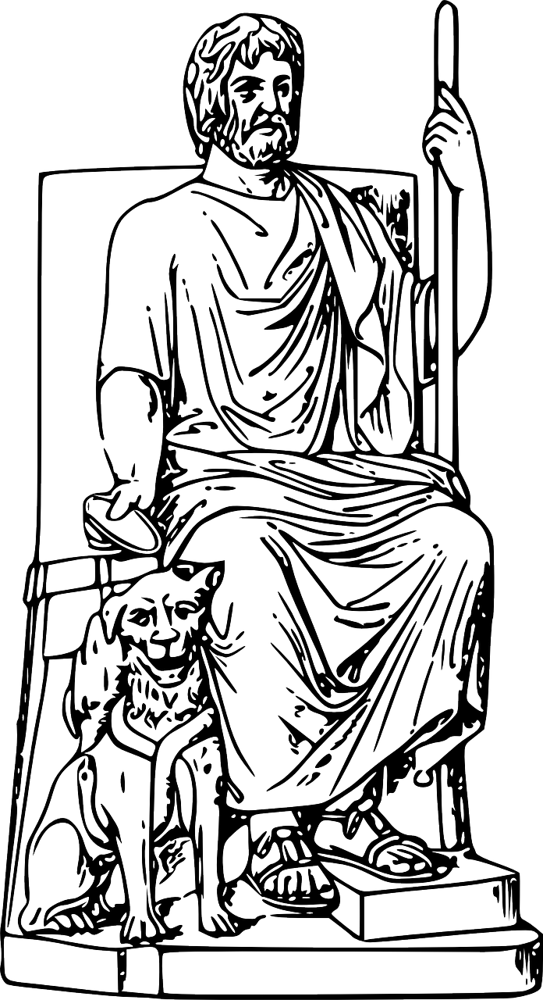
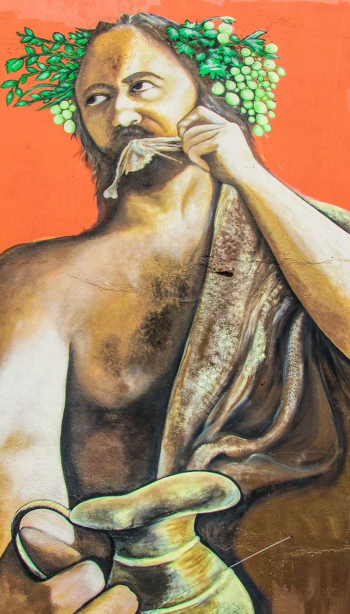

Taking a step back from real world historical events, in this entry we're going to talk about a rather famous pantheon that was a strong influence on a well known civilization: The Greek Pantheon. However, rather than focusing on Zeus, Poseidon, or Athena, the titular character of this hack'n'slash rogue-like title is Hades, God of the Underworld. Despite being in the title, Hades is not the protagonist, although he does play a major part in the story. The protagonist of the story is a lesser known being called Zagreus, Hades' son. Over the course of the game, the player learns more about the ins and outs of the relationships between the various gods.
An image of Hades, the Greek god of the underworld.
While not being very well known to your average person, Zagreus is actually a real figure in Greek mythology, theorized to have been mixed up with Dionysus (the god of wine) by some Greeks back in the day Some theorized he was even Hades himself, an alter ego of sorts. Regardless, it's the attention to little details like that that makes this game such a wonderful vessel for launching people into the world of Greek mythology. Although the game goes with the interpretation of Zagrues being Hades' son, there's a little joke in the story that alludes to the historical mixup between Dionysus and Zagreus, Dionysus telling Zagreus to make up a story about how the two of them used to be one person.
Dionysus, the Greek god of wine.
Moving on, not only is the game packed with little details like I mentioned before, but the story and characters are wonderfully written, giving all that choose to invest themselves into the story a real treat. Drama, tragedy, and many laughs are to be had in this title that reflect the actual stories of the Greek gods. Because of its well crafted narrative, people who are hooked on the story are likely to start looking more into Greek mythology than they would have before.